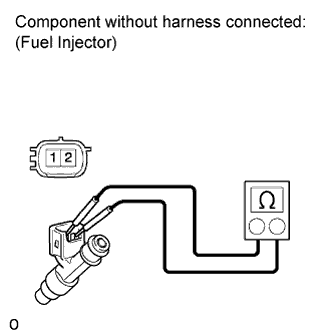
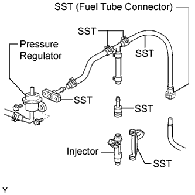
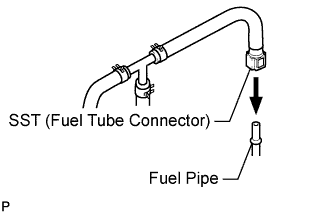
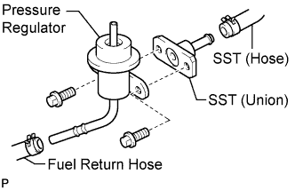
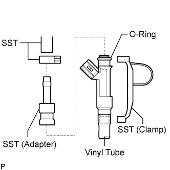
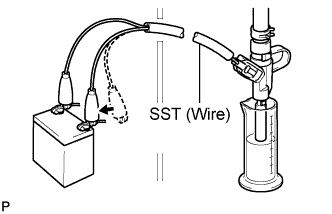
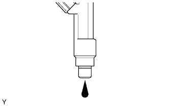

FUEL INJECTOR > INSPECTION |
| 1. INSPECT INJECTOR ASSEMBLY |
 |
Measure the resistance according to the value(s) in the table below.
| Tester Connection | Condition | Specified Condition |
| 1 - 2 | 20°C (68°F) | 11.6 to 12.4 Ω |
| 2. INSPECT INJECTION VOLUME AND LEAKAGE |
 |
Check the injector injection.
Assemble SST as shown in the illustration.
Discharge the fuel system pressure (Click here).
Disconnect the fuel inlet hose (fuel tube connector) from the fuel pipe.
Remove the bolt and disconnect the fuel pressure regulator from the fuel delivery pipe.
 |
Connect SST to the fuel pipe.
 |
Connect SST (hose) to the fuel inlet of the pressure regulator with another SST (union) and the 2 bolts.
Connect the fuel return hose to the fuel outlet of the pressure regulator.
 |
Install a new O-ring to the injector.
Connect SST (adapter and hose) to the injector, and hold the injector and adapter with SST (clamp).
Put the injector into a graduated cylinder.
Connect the intelligent tester to the DLC3.
Turn the engine switch on (IG).
Turn the intelligent tester ON.
Enter the following menus: Powertrain / Engine and ECT / Active Test / Activate the Fuel Pump Speed Control.
 |
Connect SST (wire) to the injector and the battery for 15 seconds, and measure the injection volume with a graduated cylinder. Test each injector 2 or 3 times.
 |
Check for fuel drop.
In the condition above, disconnect the tester probes of SST (wire) from the battery and check for fuel drop from the injector.